移动能源智造实验室 1.2 使用说明
适用版本：1.2.0，Windows 64位单机与校园教学部署。推荐第一次使用选择“园区机器人 + Python”。本软件的车辆、充电、温升、道路和安全计算是注明假设的教学模型；实拍样例与真实模型推理均保留来源，不输出实车认证结论。
这份说明包含20张真实界面截图；2026-10-22更新资料库、助教工程上下文、模型切换、局域网、静态障碍图像感知及执行器故障说明。实验截图来自实际执行的练习工程与隔离验收工程；教师截图使用独立测试库里的示例班级。图中的运行ID、时间、班级码和数值用于说明位置，请以你自己的当前记录为准。
第一次使用：先读第1节，再按第2节看完整操作。自己做实验：按第3节的24步表和操作图逐段完成。教师上课：读第7节；换电脑或清理数据：先读第8—9节。HTML可点击目录、放大页面；PDF适合打印，截图可放大查看。
1. 启动与停止
- 将运行包完整解压到有写入权限的普通目录，不要直接在ZIP中运行。保留 assets、dist、backend、scripts、vendor 和 requirements.txt。
- 电脑须已安装64位Python 3.12。当前开发电脑已具备；换电脑前可运行
py -3.12 --version 核对。已构建运行包不需要安装Node.js、PyTorch或联网下载模型。 - 双击根目录“启动实验室.cmd”。首次启动会创建
.runtime 独立环境并从 vendor/wheels 安装固定版本依赖，随后自动打开浏览器；以后启动会复用该环境。 - 常用地址为
http://127.0.0.1:8765。请用Chrome或Edge，保留启动窗口；关闭窗口或按Ctrl+C停止服务。 - 若8765被其他程序占用，不要强行结束其他程序。可在项目目录运行
py -3.12 scripts/launch.py --port 8790，打开提示的新地址。
主程序与学生代码运行器分别使用两个本机端口，运行器端口自动选择。默认只允许本机访问。断开外网仍可做基础实验；在线助教连接方式按实际配置与界面状态确认。
从机房其他电脑访问：本次局域网入口为 https://192.168.11.76:9443，运行器使用9444端口。先按局域网使用说明安装主机管理员提供的 EnergyTwin-LAN-CA.cer 公钥证书，再重启Chrome并访问该地址。其他电脑无需安装Python或复制整套项目；主机须保持开机和服务运行。主机系统管理员已放行指定IP的9443、9444端口，来源限定本地子网；另一台设备的实际连通仍待现场确认。本机原入口 http://127.0.0.1:8765 继续保留。
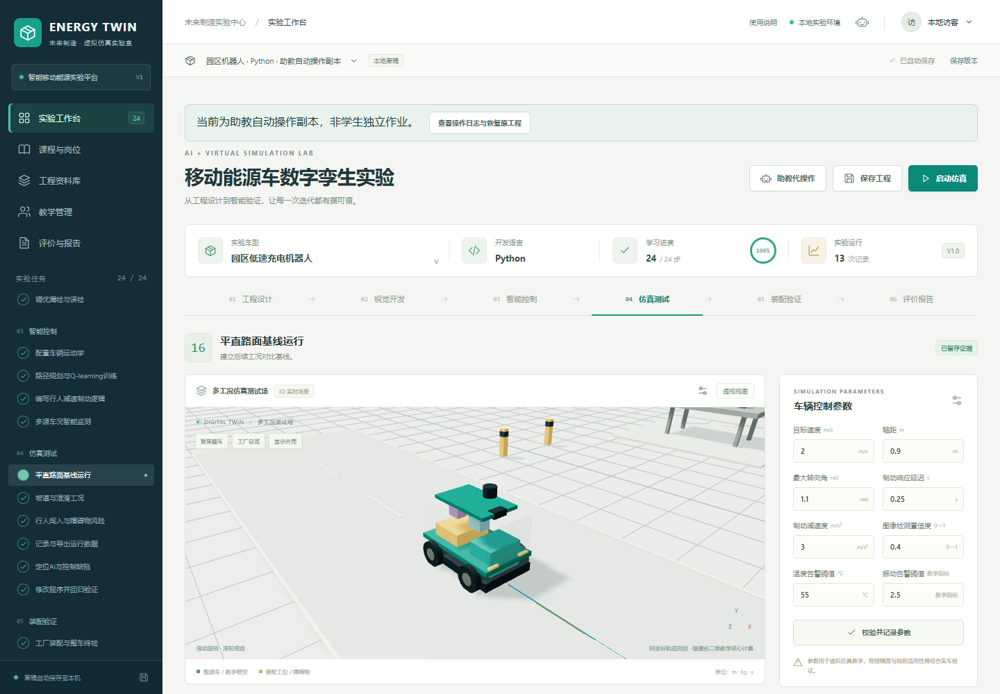
图1 工作台全貌：左侧切换任务，上方选择工程，中间查看三维场景，右侧修改当前步骤参数。画面是已完成的自动操作副本，首次新建不会显示24/24。
进入页面后先认准四个位置：左侧“实验工作台／课程与岗位／教学管理／评价与报告”；页面上方的工程名称下拉菜单；工作台标题旁的“助教自动操作、保存工程、启动仿真”；右侧参数区的“校验并记录参数”。查看本说明的入口在页面右上方“使用说明”。
看到什么才算启动成功：能打开工作台，页面没有模型或运行器加载错误，点击左侧任务后中间内容和右侧参数同步切换。不要通过双击 dist/index.html 使用平台，应从启动脚本提供的本机地址进入。
2. 第一次体验：助教完整操作
- 打开实验工作台，点击“助教自动操作”。
- 阅读面板说明，点击“新建完整 24 步工程”。系统先把当前工程完整备份到当前浏览器，再创建新的自动操作副本，不覆盖原工程。
- 观察步骤和操作日志。它实际运行推理、学生代码、强化学习、危险工况、修复回归、装配和报告；需要计算时请等待当前步结束。
- 点击“停止”可停止后续动作；当前计算可能需要退出或到超时点。停止或失败后可继续，刷新后也保留已保存的中断位置。
- 自动操作完成后，在评价与报告页查看原始数据；点击“导出自动操作副本与日志”保留练习工程和操作日志。点击“保存副本并恢复原工程”回到自动操作前的状态。
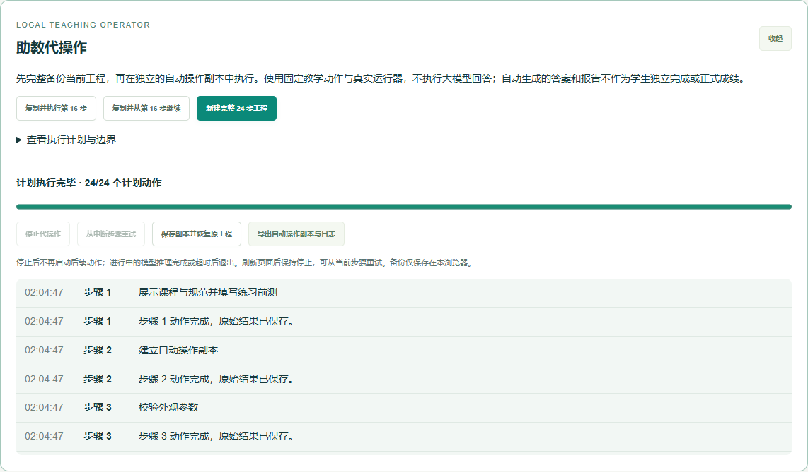
图2 助教自动操作面板：上方三个入口决定执行范围；中间进度条显示计划位置；下方保留操作日志。此图为实际执行24步后的完成状态。
最省事的体验顺序：点击绿色“新建完整24步工程” → 等待进度完成 → 查看运行与报告 → 导出练习工程 → 保存副本并恢复原工程。运行中“停止代操作”可用，完成后会变灰，属于正常状态。不要为了观察自动操作去修改原工程的任务绑定或正式分数。
“复制并执行当前步”“复制并从当前步继续”适合局部观察；缺少前置产物或参数非法时会明确停止，需要先修复。完整操作使用固定的园区Python示例，便于复现。自动操作生成的测验答案、诊断和报告有自动生成标记，不能当作学生独立完成的作业或正式成绩。恢复备份只对当前账号、当前浏览器有效；清除本站数据会删除本机备份，先导出需要保留的工程。
3. 学生独立完成24步
| 步骤 | 怎样操作 | 应保存或观察什么 |
|---|
| 1 | 进入课程与岗位、工程资料库，学习规范导读并完成测验 | 前测、资料来源和行业规范的适用范围；不要把教学阈值写成标准条文 |
| 2 | 选择车型、输入工程名、新建工程；需要服务器保存时先注册登录 | 工程ID、语言、保存与刷新恢复 |
| 3—4 | 修改尺寸，在布局面板选择和移动设备，点击校验 | 电池包络、干涉、重心；保留非法参数和修复后的对照 |
| 5 | 配置车辆和接口参数，进入充电状态机，依次连接、握手、预充和充电 | 不兼容接口和故障会阻止充电；断开、复位后再尝试 |
| 6 | 调整侧向/后向抽出方向、开口、净空及阻挡模块 | 抽出包络、门洞和空间检查，不只看车体外观 |
| 7—8 | 设置相机视角和位置，选择样本、模型；也可导入本地图片与JSON标注 | 图片、标注、权重与输入SHA-256；本地导入原图刷新后要重新选择 |
| 9—11 | 选择Python或JavaScript，编辑视觉后处理代码，执行推理与标注评价 | 同一图片下调整阈值，比较TP/FP/FN、precision与recall；高阈值可能增加漏检 |
| 12—13 | 核对底盘运动学，设置训练回合、学习率和探索率，运行Q-learning | 真实Q表更新、训练日志、栅格路径和连续车辆跟踪；二者成功率分别看 |
| 14—15 | 编写并运行安全控制、车况监测逻辑，配置温度/振动等阈值 | 代码输出、错误、制动时序；可用无故障记录拟合监测基线，与异常记录对照 |
| 16—19 | 先跑平路，再跑坡道、湿滑、行人、障碍等场景，导出数据 | 本次运行ID、车辆与代码版本、帧、事件、停止距离和碰撞；回放不会改变原始数据 |
| 20 | 选择故障基线，先记录首次诊断再修改代码 | 故障类型、根因、基线运行ID；助教建议需要用日志验证 |
| 21 | 同条件修改代码复测，增加一个不同危险工况回归，再回退旧代码复现 | 缺陷、修复、回归、回退四组独立运行；在过程面板选择对应引用并核验 |
| 22 | 回到工厂，按底盘、电池、充电模块、线束、控制器、传感器、外壳、终检顺序装配 | 漏装、错序和非法设计会阻止终检；设计修改会使相关完成状态过期 |
| 23 | 打开智能助教提问，核对评价明细 | 当前工程和所选运行的证据；区分离线规则和在线模型 |
| 24 | 选择真实运行与指标，保存数值引用，撰写假设、分析、结论并导出 | JSON原始报告、可打印HTML和CSV；正式结论由教师审阅 |
修改代码、设计或模型后，应重新运行受影响实验。完成勾选是流程状态，不能代替结果证据。建议每次重要改动先保存版本，并记录改了什么、预期怎样变化。
规划模块的到达率来自宿主对完整路线的连续跟踪评测；主工况默认只运行24秒，显示这段时间内的轨迹、偏差和安全事件。路段检查通过不代表已经到达完整规划路线终点，需分别查看规划评测和主运行的时长、终点位置。
设计与电池拆装：先看包络，再看外观
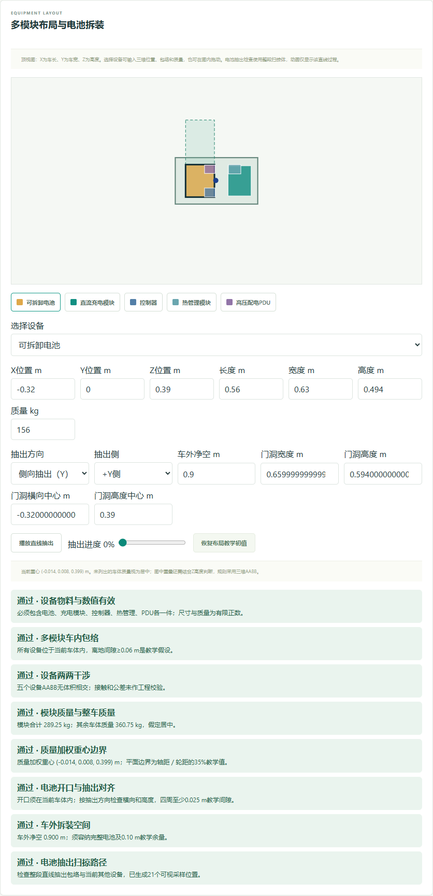
图3 步骤4／6的布局面板：点击有颜色的模块选择设备，修改下方位置和尺寸；抽出方向、门洞和净空在同一面板中设置。
- 点击左侧“内部布局”或“可拆卸电池仓”对应任务，在图中选择电池、充电模块等设备，也可点击图例选择。
- 调整X/Y/Z位置和长宽高；需要时在顶视图拖动。X沿车长、Y沿车宽，Z表示高度，单位为米。
- 选择侧向或后向抽出，填写门洞尺寸与车外净空，点击“播放直线抽出”。动画表示所设路径，是否可拆装还要看扫掠包络和检查结果。
- 在右侧点击“校验并记录参数”，向下查看工程检查。修正干涉后再次校验，保留修改前后的版本。
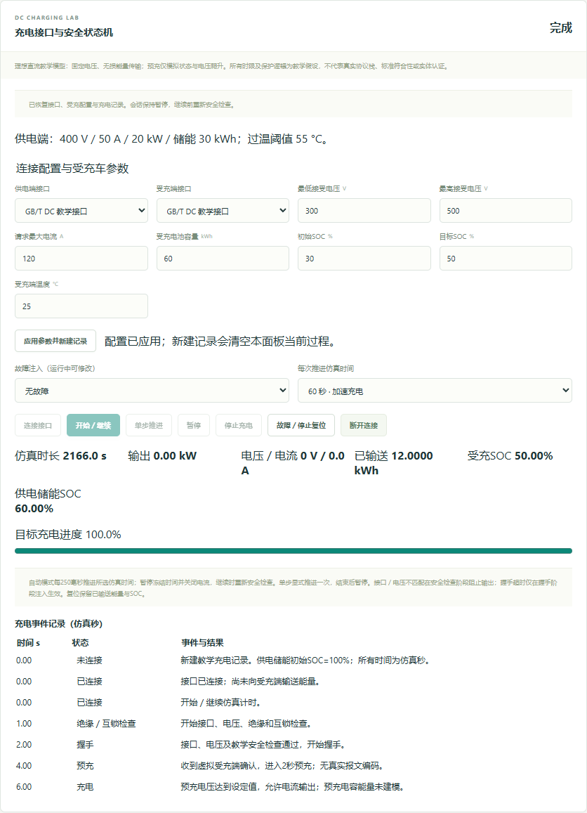
图4 步骤5的充电状态机：参数应用后，按连接、开始／继续、单步或自动推进的顺序操作；底部保留能量、SOC和事件。
充电操作从“应用参数并新建记录”开始，然后“连接接口” → “开始／继续”。想看握手、预充等状态变化时选择每次1秒并用“单步推进”；查看能量与SOC变化时可选60秒或300秒。出现故障先看事件原因，再停止、复位或断开。改参数后必须重新应用，不能沿用旧参数记录继续。
视觉与代码：固定输入，逐项比较
图5 步骤8—11的模型选择：官方基线和两组教学微调权重各有说明，展开记录可查看真实训练及留出评价。
图6 真实街景推理示例：左侧是实际检测框，右侧“执行真实推理”，下方“使用随包标注计算 precision / recall”用于评价。模型会出现误检和漏检。
- 在步骤8—11选择图片和“离线视觉权重”。第一次建议选官方基线与随包图片，不用先导入数据。
- 点击“执行真实推理”，等待完成。框上的百分比是该候选的分数，不是整套数据的准确率。
- 点击“使用随包标注计算 precision / recall”，展开“标注单个人体 / IoU ≥ 0.5 评价”，看TP、FP、FN和标注对应情况。
- 只改一个条件，例如后处理阈值，再执行推理和评价。比较时确认图片、权重、语言、代码版本与阈值；不要把不同输入下的分数直接当作改进。
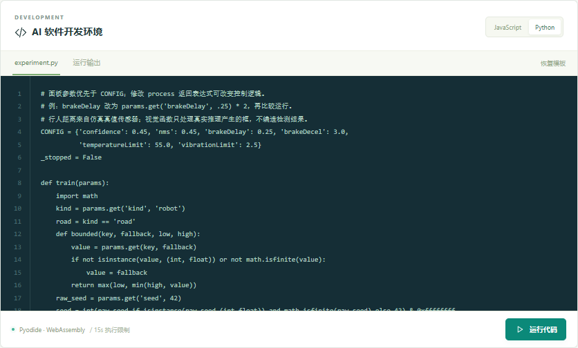
图7 代码实验区：右上切换语言，中间编辑experiment.py／experiment.js，下方“运行代码”；点击“运行输出”查看结果，点击“恢复模板”还原当前语言代码。
先选Python或JavaScript，再编辑同一份实验代码中的相应函数。模板包含训练、视觉后处理、控制和监测逻辑，切换左侧步骤不会自动生成另一份代码。修改后点击“运行代码”，再点“运行输出”看结果；出现语法错误、输出格式错误或超时，先修代码再做工况。“恢复模板”会覆盖当前语言的编辑内容，操作前先保存。
路径训练与工况：训练成功后还要看车辆跟踪
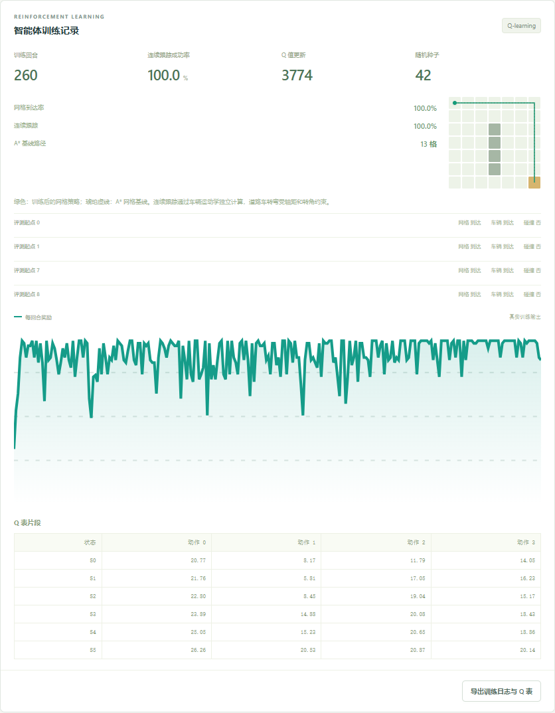
图8 步骤13的真实训练结果：栅格路线、奖励曲线、Q表和连续跟踪评测分别展示，不能仅凭曲线上升判断车辆成功到达。
在右侧填写回合、学习率、折扣因子、探索率和随机种子，运行训练。先与A*参考路线比较，再核对车辆连续跟踪的到达率、碰撞和轨迹偏差。训练日志与Q表随工程保存；固定种子适合复现实验，改种子适合观察稳定性。
图9 感知与制动链路：先确认感知来源，再解释制动结果。真实ONNX模式还需核对采样、延迟、亮度与每次推理记录。
步骤16先做平路基线；步骤17—18再切换坡道、湿滑、遮挡、行人或静态障碍场景。检查“感知来源”，点击“执行完整仿真”或工作台“启动仿真”，等待运行结束，再在记录中选择本次结果。查看原始碰撞、检测帧和制动事件，点击“导出采样数据”保存JSON。切换三维镜头只改变观看方式，不能改善已经记录的结果。
静态障碍也支持“真实ONNX · 图像驱动制动”。先在步骤7设置FOV80°、安装高度0.9m，再到步骤18选择“城市道路 · 静态障碍”，设置速度1m/s、置信阈值0.15，保留默认周期0.5s、延迟0.2s和亮度1，运行后展开“本次感知时序”。这些是便于对照的教学参数，不是实车安全阈值。
静态目标使用有CC0许可的汽车照片裁切，仅汽车类别进入检测信号；行人框不能代替。图像投影平面与三维箱形碰撞代理均为教学假设。保存正常运行后，可在视觉函数中筛除汽车框再测试；恢复代码后，仅将亮度设为0.02再测试。比较输入哈希、实际候选、学生保留框及制动结果，不用场景真值补回学生删除的框。
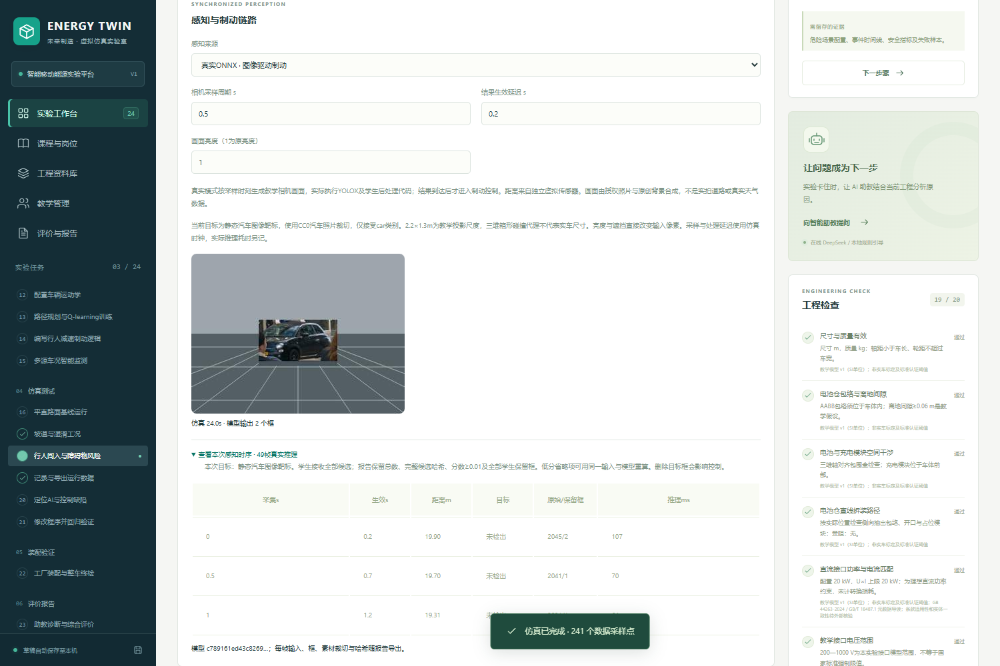
图19 静态障碍真实ONNX运行：中间是实际模型输入的汽车照片靶标，展开“本次感知时序”可核对采集和生效时刻、目标检出、原始候选总数与学生保留框。前几帧未检出不等于整次运行漏检，需继续查看后面的帧。
排错与回归：把四次运行串成证据
图10 步骤20—21的过程评分依据：首次诊断、受控修复、额外危险工况回归和回退复现分别核验。截图为练习工程的已有证据。
- 先产生一条确有问题的运行，在“过程评价与证据引用”里选择缺陷基线，选择根因并点击“记录首次诊断（先于修复运行）”。首次记录后锁定，不能在修好后倒填。
- 将修复前的代码完整复制到本地文本文件，同时导出工程留底。只改要验证的代码，保持车型、工况、参数、语言和感知设置一致，再运行得到修复记录。
- 用修复代码另跑一个危险工况。保留当前工程中的新旧运行，将文本文件里的旧代码复制回编辑器，切回原工况再运行，得到回退复现记录。这里仅回退代码；工程菜单的快照恢复会同时恢复参数、运行和装配，不能用它替代这一步，否则可能把刚产生的修复记录一起回退。
- 回到过程面板，选择基线、修复、额外回归和回退四组运行，点击“核验并保存过程引用”。不同运行必须有不同ID，不能重复选择同一结果凑齐。
- 在同一面板下方选择报告引用的运行、指标和数值，写出原因与局限，点击“保存报告证据引用”。数值能自动核验，解释仍由教师评阅。
工厂装配：按物料和先后依赖完成终检
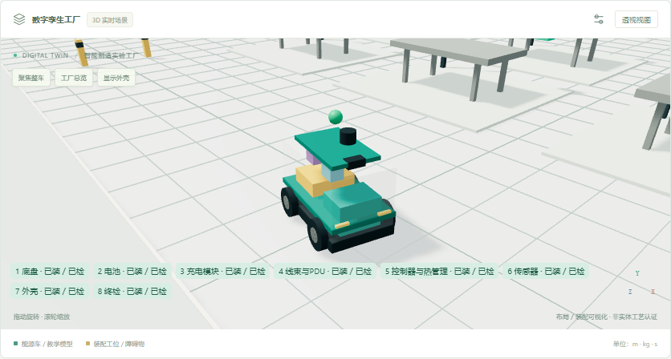
图11 步骤22的三维工厂：可用“聚焦整车”和“工厂总览”切换观察；工位显示用于辅助核对装配。
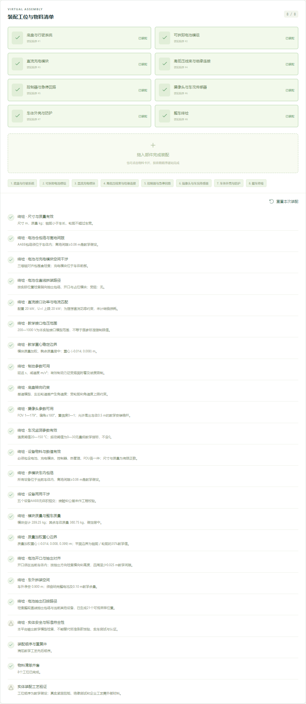
图12 装配工位与物料清单：每个部件显示状态，按前置依赖加入装配区，最后完成终检。此图已装配完成。
点击未装配且可用的部件，或将其拖入装配区；被锁定的部件先查看依赖。底盘、电池、充电模块等装完后再做终检。若提示设计非法、漏装或顺序不符，应回到对应任务修正；不要只根据模型看起来完整就判定通过。
4. 怎样比较视觉数据与权重
在步骤8—11的“离线视觉权重”选择官方基线、原亮度微调或亮度覆盖微调。固定同一图片、阈值、语言和后处理代码，分别执行真实推理与评价，再比较记录中的权重哈希和预测结果。
随包包含NASA教学样本和逐张登记CC0许可的实拍街景样例。两组微调权重实际执行了60步检测头梯度更新，骨干和BN冻结；训练/留出按原照片分组，日志与评价位于 assets/models/training-summary.json。样本很少，部分留出目标完全漏检，不能预设“增加亮度覆盖一定更好”，也不能把一次误检归因于亮度增强。亮度变换也不等于真实夜间、雨雾或不同相机数据。详细方法见“视觉数据与权重对照”。
浏览器提供推理、代码后处理与评价；检测网络的微调在教师准备环境离线执行，不在学生浏览器中训练。课堂不需要安装训练工具。
5. 感知、制动和故障解释
- “合成信号”模式适合快速分析控制机理；它不是图像模型检测结果。
- “真实图像推理”模式实际执行ONNX，检测结果到达控制链路后才可触发逻辑；图像来自教学合成相机，距离由独立虚拟传感器提供。
detectedFrames=0 仅表示控制链路没有有效检测，不能直接判断模型原始输出一定没框。应分层检查原始候选、阈值/NMS、学生输出与可用时刻。brakeResponse=-1 表示没有成对的请求与有效机械响应记录，不能当作零延迟；没有制动事件时停止距离为0不能当成制动效果好。- “制动执行器完全失效”独立于制动延迟。运行后查看请求与实际执行曲线：
brakeCommand是当前请求，brakeDemand是延迟后送达请求，brake是实际执行比例，brakeDeceleration是机械减速度。失效时有请求但机械输出为0。选择同工况“无故障”可做对照；切换故障是另一次运行，不能当作学生修复了硬件。应停用检修，调阈值或减速只能缓解风险，不能取得硬件的软件修复分。 - 工况含故意注入的漏检、延迟、执行器失效、过热、偏置与规划问题。点击“重跑固定工况（11项）”会保留失败；执行器故障失败项用于诊断，不要求把它改成通过。
- 图像报告保存完整候选总数和哈希、分数≥0.01的候选及所有学生保留框，低分省略范围另有标识；学生运行时仍接收全部候选。原始输入图和模型哈希可用于重新推理核对。
- 三维行人步态、轮胎转动和位置插值用于回放显示。碰撞、最小间距和成绩仍使用原始物理帧与事件计算。
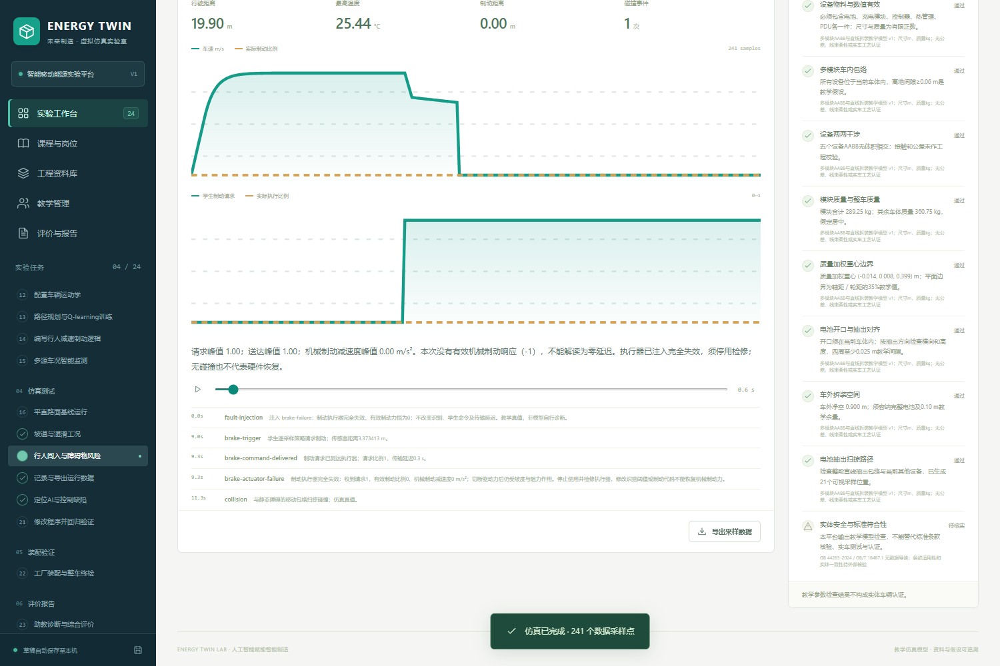
图20 执行器失效的实际运行：学生请求曲线升起，实际执行仍为0；下方送达和失效事件说明请求已到，但机械减速度为0。此例发生1次教学碰撞，不能将碰撞后速度归零解释成制动有效。
6. 智能助教与自动操作的区别
“智能助教”结合当前工程与学生作业状态回答：读取当前步骤、已完成操作、最新布局校验、代码、最近运行和报错。登录保存的工程会核对真实作业要求、提交状态和教师反馈。浏览器草稿不能直接视为已提交或已评分。提问可以写：“这次运行检测帧为0，应该先查哪一层？”或“侧向抽出需要多大净空？请按当前电池宽度解释。”系统能保存同一工程的多轮对话；切换工程或账号不会自动把其他工程的上下文混入。
“助教自动操作”是用户主动启动的固定教学操作器，动作范围在界面中列明。它不执行大模型返回的命令，不修改正式教师成绩，不删除账号或数据，不代替学生提交作业。
直接在空白输入框提问或继续追问，无需先点击示例。 打开面板会自动聚焦输入框；Enter发送，Shift+Enter换行。中文输入法确认候选词时不会发送；等待回答时可继续写下一条草稿，回车不会重复提交。顶部“已配置”表示具备请求条件；每条成功回复标明“DeepSeek 实时回答”和模型名称。在线请求失败会显示具体原因及“重新发送这条问题”；本地规则检查默认折叠，只有主动展开才显示，不作为在线回答混入后续对话。
默认本机配置使用离线规则。运营人员可在实际数据目录的 assistant-settings.json 中设置 {"onlineEnabled":true}，或设置 ENERGY_ASSISTANT_MODE=online，并在服务端配置DeepSeek密钥后启用在线助教。本机访问的主机与连接来源均为loopback时允许访客提问；校园或远程访问必须登录。密钥不写入浏览器，也不随运行包分发。连接失败、超时或空答复时查看本条回答的模式及原因，不只看顶部配置状态。
切换在线助教模型
平台使用DeepSeek官方对话API：https://api.deepseek.com/chat/completions。默认模型为 deepseek-flash（当前官方名称DeepSeek-V4.1-Flash），可切换为 deepseek-v4-pro（DeepSeek-V4-Pro）。列表标明来自官方文档、实时查询还是缓存，模型名称以每条成功回答实际返回的ID为准。
- 打开“实验助教”，找到“助教模型”，查看当前已保存的模型。
- 展开选择框，选择要使用的模型，点击“保存模型”。没有点击保存前，仍使用原先设置。
- 保存成功后发送下一条问题。切换不会清空当前对话，也不会移除工程、作业进度或已选择的项目文件。
- 检查新回答旁的实际模型名称，确认本次调用使用的模型。已有回答仍保留当时的模型标识。
- 点击“刷新模型列表”可以重新查询官方可选模型。刷新失败会保留当前选择与缓存，请查看具体提示；提问失败也不会悄悄改用另一个模型。
当前电脑的本机访问可直接保存；校园或远程访问只有管理员可修改本机构默认模型，教师和学生只能查看。如选择框不可修改，请由机构管理员操作。密钥与API地址只能由服务端配置，不在助教面板输入。切换模型不改变实验评分规则。
已保存的模型优先于服务端 DEEPSEEK_MODEL 环境变量。设置写入实际数据目录的 assistant-settings.json，不会关闭已有在线开关；换电脑使用新解压的运行包时，需重新配置在线开关和服务端密钥。接口说明见DeepSeek对话API和模型列表API。
添加项目文件让助教一起查看
- 打开“实验助教”，点击“添加项目文件”，选择要讨论的文件，再输入具体问题并发送。
- 支持
.json、.py、.js、.ts、.tsx、.jsx、.md、.txt、.csv、.log、.yaml、.yml；最多5份，单份文件不超过2MB。 - 实际用于提问的文本每份最多16,000字符、合计最多48,000字符。单份超长时显示截断提示；总量超限时先移除文件或缩短内容。不要把截断后的回答当成对整份文件的完整审查。
- 选择完整导出的工程JSON时，平台提取代码、报告、训练概况及最近3次运行摘要，避免直接发送整段轨迹。助教只能看到本次请求提供的片段，不能默认读取整个磁盘、目录或其他工程。
- 文件列表按账号与工程隔离，保存在本次页面会话；切换工程显示各自文件，刷新后需要重新选择。移除不需要的文件后再发送下一次问题。
本轮用实际界面连续验证5次在线问答：净空不足时指出0.53m缺口；将平台净空改为0.97m后识别通过及0.24m余量；换题后解释当前Python中的1.37限速；按第13步真实任务指导训练；读取已完成的第2步和实际触发的 unknown_speed 报错，指出当前训练缺少的产物。未登录的提交状态保留“未核实”。失败提示、规则折叠和原问题重试另外使用模拟响应核对，未冒充真实断网。核验记录见 docs/evidence-reference-library/assistant-platform-qa.json。
模型切换另做了两次真实请求：分别保存Pro与Flash后，回答显示实际调用的模型，并继续读取第14步、当前代码中的1.37限速及已有对话。共8项检查通过，检查后已恢复Flash默认设置。此项检查验证本机的模型保存与问答，不代替其他设备的局域网连接验收。
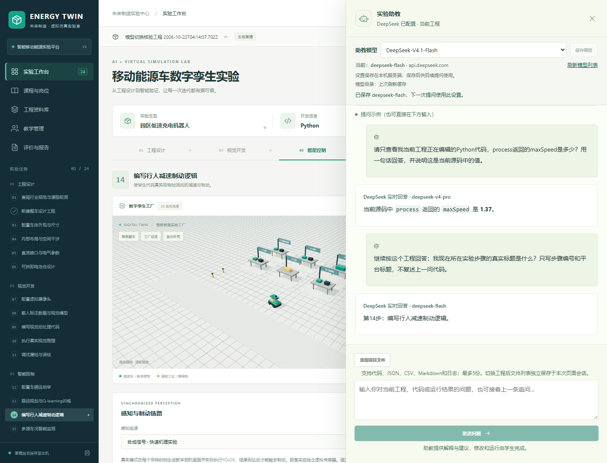
图13 助教面板的模型设置与真实回答：选择“助教模型”后点击“保存模型”；新回答保留实际模型名称，并结合当前步骤、代码和对话解释问题。
实际使用时先选择你要分析的运行，再打开助教。展开“提问示例”后，点击“排查故障”等示例会填入问题，仍需点“发送问题”。回答出现了错误的运行ID或缺少证据，就回到运行列表核对，补齐问题后再次提问。聊天助教只给建议；要让平台展示完整操作，使用第2节的“助教自动操作”。
7. 教师使用
本次部署已准备管理员 lab_admin 和教师 lab_teacher。口令仅保存在主机的 data/管理账号.txt，不写入本说明或运行包；由主机管理员分别交付对应账号的口令。管理员可修改本机构助教模型和数据管理设置，教师负责自己的班级、任务与批阅，教师的模型设置为只读。
- 运营人员在项目目录用
.runtime/Scripts/python.exe scripts/manage.py create-user teacher1 --role teacher 创建教师。密码在终端隐藏输入，没有默认密码。 - 教师登录后进入教学管理，建立班级、向学生提供班级码并发布任务。
- 学生登录加入班级，从任务建立工程，完成实验后提交。提交保存当时的不可变快照；后续编辑草稿不覆盖已提交版本。
- 教师选择作业和学生提交，查看代码、运行、报告和过程证据，填写反馈与正式分数。规则自动估分和教师正式评分分开展示。
- 需要时调整评分权重并冻结版本。已有绑定工程和历史报告按冻结规则解释，不能用后来权重改写旧结果。
导出前查看评价明细。若视觉项提示“视觉代码或实验输入已变化”，回步骤10/11，按最终图片、权重、代码和参数重新执行真实推理及标注评价，再返回报告。步骤标记表示曾执行操作，不能代替当前有效证据；失效项不计分。
自动估分可复算，但不是防篡改考试系统。首次试教应人工复核学生解释、课时与目标机房表现。
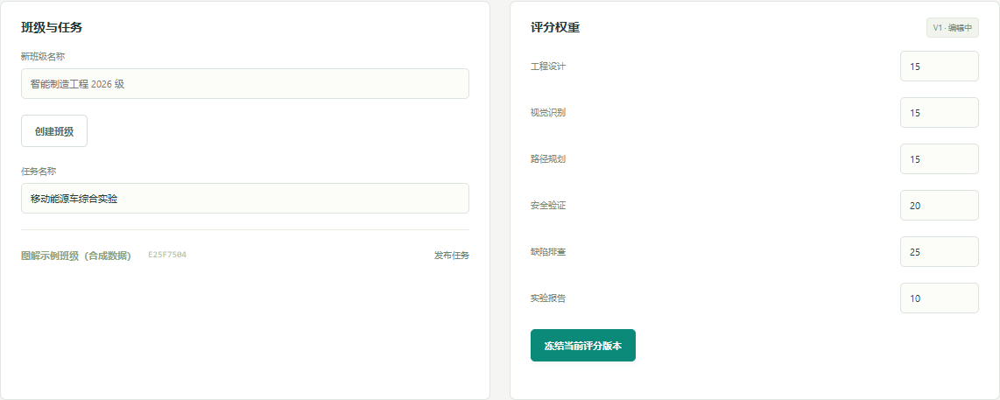
图14 教师的班级、任务与评分配置：左侧创建班级和发布任务，右侧设置并冻结评分权重。画面中的账号、班级和任务为合成示例。
教师登录后先点“加载教师数据”。在“班级与任务”输入班级名并创建，将本班班级码发给学生；填好任务名后点该班“发布任务”。学生需登录自己的账号加入班级，并从任务进入实验。正式提交后，教师在教学管理查看提交、填写反馈；不要把浏览器里的助教自动操作副本直接当作学生独立作业。
8. 数据保存、导出与删除
未保存草稿按账号保存在当前浏览器，服务端工程在 data/energy.sqlite3；可通过 ENERGY_DATA_DIR 指定其他目录。导入原图主要保存在当前页面内存，助教自动操作备份保存在当前浏览器IndexedDB。
登录后在教学管理中的“账号与学习数据”可以导出本人的服务端学习数据、删除本人未提交工程和申请注销。重要操作须填写界面显示的确认文字和当前账号密码。删除账号包括本人提交及评分；如只想移除草稿，不要选择注销。
机构管理员可在同一面板按学生导出或删除，转移班级负责人、设置机构保留天数并执行到期清理。默认不设置学习数据自动删除期限。设置后在服务启动或手动清理时处理到期且无活动的学习明细；账号、班级作业、冻结规则和审计不随之清除。
已提交作业引用的工程不能单独删除；有班级等依赖的教师/管理员注销会被拒绝，先转移职责。当前浏览器清理只处理当前账号范围。历史备份、已下载报告和其他设备数据需要由持有人另行处理，删除后恢复旧备份可能重新出现旧数据。详细范围见“数据管理”。
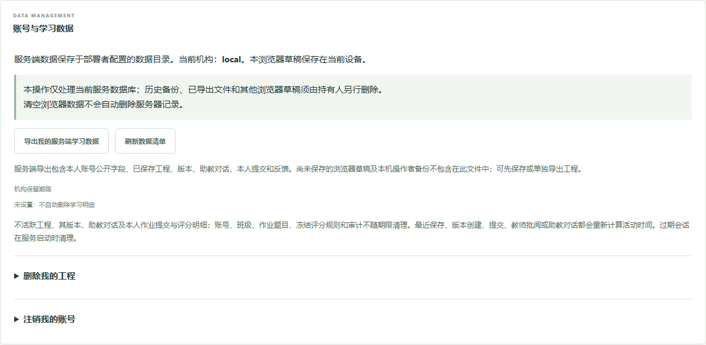
图15 账号与学习数据：先导出自己的服务端数据；删除工程、注销账号等操作分别展开，并按界面要求确认。示例使用测试教师账号。
每次实验结束：保留能再次打开的工程
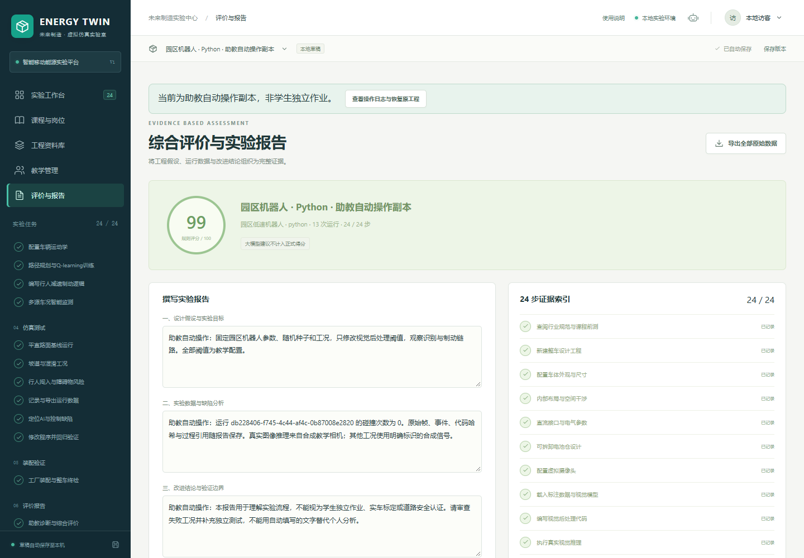
图16 评价与报告页：上方“导出全部原始数据”保留完整工程，概览显示规则估分与证据进度。自动操作副本的完成状态不能当作正式成绩。
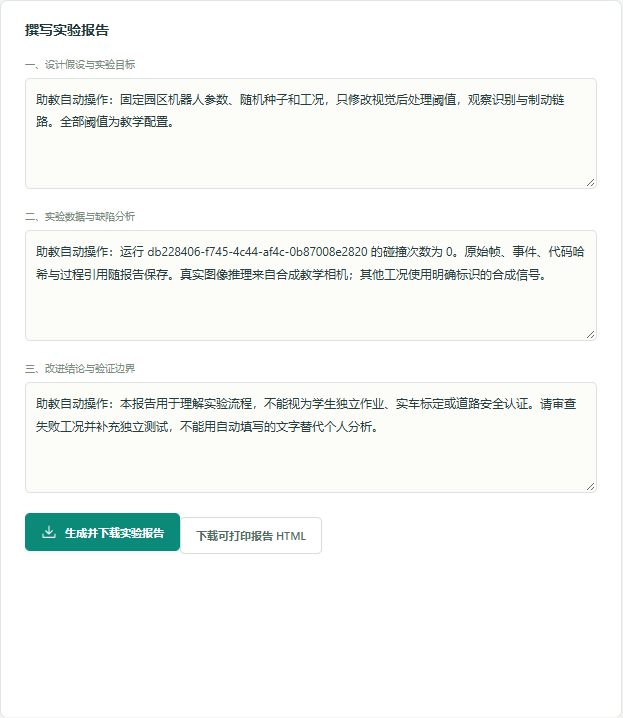
图17 报告填写与导出：分别写设计假设、实验分析和结论；“生成并下载实验报告”导出JSON，“下载可打印报告HTML”用于阅读和打印。
推荐保存三类文件：完整工程JSON用于恢复继续编辑；报告JSON／HTML用于交作业和阅读；关键运行CSV用于独立绘图分析。导出后检查文件能打开、运行ID正确。恢复工程时，点顶部工程名称下拉菜单 → “导入工程JSON”选择完整工程文件；不要把CSV或截图当作工程导入。
9. 备份、恢复和换电脑
备份命令（目标文件须尚不存在）：
.runtime/Scripts/python.exe scripts/manage.py backup backups/course-2026-10-21.sqlite3
停止服务后恢复：
.runtime/Scripts/python.exe scripts/manage.py restore backups/course-2026-10-21.sqlite3
恢复会保留原数据库的回滚副本并撤销旧会话。浏览器草稿和IndexedDB备份不包含在数据库备份中；换电脑前请单独导出工程和报告。更新程序前先备份用户数据，不能把发布ZIP当作个人数据备份。
10. 校园部署
单机教学直接使用默认localhost。本次局域网以校园模式运行：主站 https://192.168.11.76:9443，独立代码运行器9444，只绑定当前局域网IP并限制所在子网访问。登录后使用工程、班级与在线助教；模型切换仅本机构管理员可保存。主站与原本机入口共用服务端数据库，但浏览器草稿按访问地址分别保存。换入口前，先登录并保存到服务端，或导出完整工程JSON后在新入口导入。
主机使用PowerShell 7运行 scripts/start-lan.ps1 -Address 192.168.11.76；防火墙需系统管理员运行 scripts/allow-lan-firewall.ps1，仅放行本地子网的9443、9444端口。其他电脑须先信任主机提供的CA公钥证书。具体步骤、证书向导与排查见局域网使用说明，学校正式域名和反向代理配置见[校园部署](校园部署.md)。不要共享服务器私钥、密钥、数据库或账号口令文件。
本机操作检查通过不代表学校域名、HTTPS、低配电脑或班级并发已经验证。跨校推广、企业真实任务、标准正文适用性和教学效果须结合对应实际材料验收。
11. 常见问题
资料库：怎样打开原PDF或官网页面
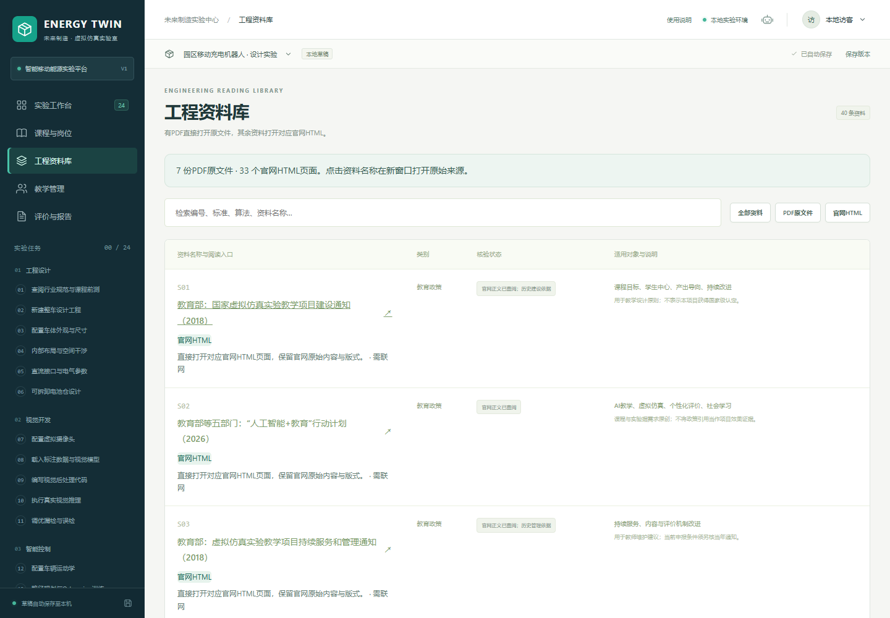
图18 修订后的资料库：有PDF时打开原PDF，没有PDF时打开对应官网HTML页面。
- 点击左侧“工程资料库”，输入编号或名称，例如“S04”。
- 点击资料名称。标“PDF原文”的直接打开原PDF文件；没有PDF的资料直接打开对应官网HTML页面。资料库不另外制作正文阅读页。
- 当前40条入口包括7份原PDF和33个官网HTML页面，均需要联网。代码、图示、附件和网页交互按原站提供的内容查看。
- 标准类HTML入口可能是标准信息页或公开通知页，是否提供全文、预览或下载，以官网实际显示为准；资料说明会标明页面类型。遇到官网人工验证、登录或访问限制，请在原站按其要求处理。
| 现象 | 处理 |
|---|
| 启动提示找不到Python或版本不符 | 安装64位Python 3.12并启用Python Launcher；重新打开启动脚本 |
| 其他电脑打不开局域网地址 | 确认主机服务运行、双方处于同一子网；系统管理员须先放行9443和9444。不要在其他电脑打开127.0.0.1；详见局域网使用说明 |
| 局域网页面提示证书不受信任 | 从主机管理员取得本次部署的CA公钥证书，安装到当前用户的“受信任的根证书颁发机构”，完全关闭并重开Chrome；不要忽略证书错误继续访问 |
| 从本机地址换成局域网地址后草稿为空 | 两个地址的浏览器存储分开；回原入口登录并保存服务端工程，或导出完整JSON后在新入口导入 |
| 模型/运行时文件加载失败 | 确认完整解压、浏览器使用localhost或HTTPS；核对assets目录，关闭错误后重试，不使用生成的占位结果 |
| 代码死循环或超时 | 等待运行器超时并终止，保存错误记录，恢复模板或修正循环后重跑 |
| 刷新后本地图片不见 | 图片原文件未上传保存；重新选择原图和标注，核对哈希一致 |
| 设计已修改但旧报告没变化 | 旧运行是冻结快照，重新校验设计并运行，报告中选择新运行 |
| 完成标记变为未完成 | 相关输入或代码已变更，重新执行受影响步骤，保留历史运行用于比较 |
| 助教显示离线规则 | 查看本条回答的模式，核对网络、登录与模型服务配置；在线连接恢复后重新提问 |
| 保存模型后不确定是否生效 | 发送一条新问题，查看该条成功回答显示的实际模型ID；已有回答不会因切换而改变 |
| 助教模型不可修改或列表刷新失败 | 校园/远程访问由机构管理员保存默认模型；刷新失败时先查看提示并核对服务端配置与网络，不改用未确认的模型 |
| 助教操作中断 | 打开代操作面板查看最后错误，修正原因后继续，或导出练习工程并恢复原工程 |
| 提示浏览器存储空间不足 | 保持当前页，先到评价与报告“导出全部原始数据”；确认文件已保存后再登录，从工程菜单导入完整JSON并保存到服务端。不要先刷新或切账号。大量对照实验分工程保存，避免单个本地工程无限积累运行 |
| 导出后数值与界面不同 | 核对选择的运行ID、冻结评分版本和单位，用 scripts/recompute-report.mjs 复算；保留原始文件供教师检查 |
操作结束前建议导出工程、原始报告和关键CSV。最终验收范围与仍需外部证据的项目见同包“最终验收报告”。